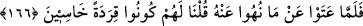

kötülükten men edenleri kurtardık.” Yani, Allah, içlerinden Cumartesi günü balık
avından sakındıran önceki ayette zikredilen iki grubu kurtardı.
İbn Abbas (r.a.) demiştir ki: Vallahi yasak günde balık avını helâl görenlere inen
azab, bunu helâl saymayıp ona karşı yumuşak davrananlara da inmiştir.
Hasan-ı Basrî ise iki topluluğun da kurtulduğunu, emre muhalefet eden topluluğun ise
helâk edildiğini söyleyerek kendisine nakledilen İbn Abbas (r.a.)’ın görüşünü
reddetmiş ve şöyle demiştir: “Allah Teâlâ ancak tek topluluğu helâk etmiştir. Çünkü
iyiliği emretme ve öğüt verme konusunda en tesirli olan şey, Allah’ın tehdîdini (vaîd)
hatırlatmaktır. Üçüncü topluluk da “Allah’ın helâk edeceği yahut şiddetli bir şekilde
azab edeceği bir kavme artık ne diye öğüt veriyorsunuz?” diyerek Allah’ın tehdidini
hatırlatmışlardır.” Hasan-ı Basrî’nin sözü, ayetin zahirine daha uygundur. (Haddâdî
Tefsiri’nde böyle geçmektedir.)
Haddi aşarak ve emre muhalefet ederek “zulmedenleri de yapmakta oldukları
kötülükler yüzünden çetin” ağırlık ve mânâ bakımından şiddetli “bir azab ile
yakaladık.” Yani “Onları, devamlı olarak tâatten çıkmak demek olan fâsıklık yapmaları
yüzünden zikredilen azab ile yakaladık. Bu fâsıklık, aynı zamanda (Allah’a karşı) zulüm
ve düşmanlıktır.” Belki de Allah Teâlâ onları tamamen helâk etmeksizin şiddetli bir
azabla azablandırmıştır. Fakat onlar, yaptıkları hatadan vazgeçmemişler, bilakis
azgınlıklarını artırmışlardır. Bundan sonra da Hak Teâlâ onları maymun suretine
çevirmiştir. Nitekim sonraki ayet buna delâlet etmektedir:
166. Kibirlenip de kendilerine yasak edilen şeylerden vazgeçmeyince onlara:
Aşağılık maymunlar olun! dedik.
“Kibirlerinden dolayı kendilerine yasak kılınan şeylerden vazgeçmeyince” Yani
onlar inad ettiler, büyüklendiler ve yasaklandıkları şeyi terk etmekten yüz çevirdiler.
Kibirlenmek ve yüz çevirmek de yasak kılınan şeylerdendir. “onlara: “Aşağılık” hakir,
zelil ve insanlardan uzak “maymunlar olun.” dedik.”
Buradaki “maymunlar olun” emrinden maksad, sözle bildirilen bir mükellefiyet
değil, tekvinî bir emirdir. Çünkü onların kendilerini maymun yapmaya güçleri yetmez.
Güç yetmeyecek bir şeyi emretmek ise makul değildir. Dolayısıyla burada aslında ne
söz, ne emir, ne de emredilen vardır. Olan ancak Allah Teâlâ’nın kudret ve iradesinin
onları maymunlaştırmaya taallukudur. Böyle bir durumdan Allah Teâlâ’ya sığınırız.
Rivayet edilir ki yahudiler de bizde olduğu gibi Cuma gününü kutsal saymakla
emrolundular. Fakat onlar Cumayı terk edip Cumartesi gününü tercih ettiler.
“Cumartesi günü, ancak onda ayrılığa düşenlere (farz) kılındı.” (en-Nahl, 16/124)
ayetinde kastedilen de budur. Onlar bu günle imtihan olundular. Bu günde onlara balık